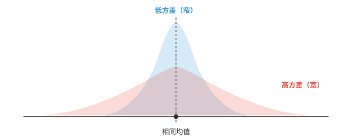
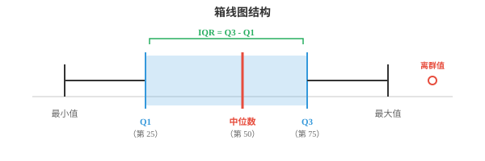
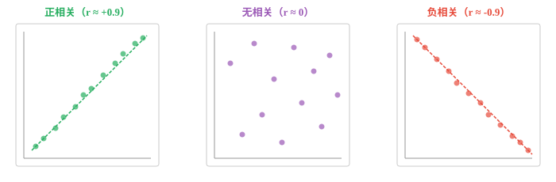

统计量（Statistical Measures）¶
统计量以单个数值汇总数据的离散程度、位置、形状和关联关系。本节介绍方差、标准差、四分位数、偏度、峰度、协方差、相关系数和 z 分数，它们构成 ML 探索性数据分析和特征工程的工具集。
- 上一节将矩介绍为一组汇总统计量。本节展开由它们导出的实用工具：离散程度、位置、形状和关联关系的度量。
大白话
矩是底层的形状描述，本节把它们变成数据分析时常用的具体工具：看数据散不散、排第几、是否相关、有没有异常点。
- 离散程度（dispersion）回答一个问题：数据分散得有多开？两个班级可以有相同的平均考试分数，却有截然不同的分散程度。
大白话
平均分一样不代表成绩情况一样：一个班可能人人接近平均分，另一个班可能有人很高、有人很低。

- 窄的蓝色分布方差低：大部分数值紧密聚集在均值附近。宽的红色分布方差高：数值分散得更远。
大白话
图越窄，数据越抱团；图越宽，数据离中心越远。方差就是给这种宽窄一个数值。
- 方差（variance）是各数值与均值距离平方的平均值。取平方是为了避免正、负偏差彼此抵消。
大白话
先算每个数离均值多远，再平方后平均。平方让高低两侧都算作偏离，也会特别重视离得很远的值。
- 处理样本，即不是完整总体时，应除以 \(N - 1\) 而不是 \(N\)。这一修正称为贝塞尔校正（Bessel's correction），它考虑到样本通常会低估真实变异程度：
大白话
样本的均值是用这批数据自己算出来的，会让偏差看起来略小；除以 \(N-1\) 是为补回这种系统性的低估。
- 标准差（standard deviation）是方差的平方根：\(\sigma = \sqrt{\sigma^2}\)。它使度量回到原始单位。若数据单位是厘米，方差单位为 cm\(^2\)，标准差则重新为 cm。
大白话
方差虽然有用，但单位被平方后不好直觉理解。开平方得到标准差后，又能直接说“通常相差多少厘米或分数”。
- 平均绝对偏差（Mean Absolute Deviation，MAD）是更简单的替代指标。它不平方，而是取每个偏差的绝对值：
大白话
MAD 只看每个数离均值的实际距离，不把远距离再平方放大。
- MAD 比方差对离群值更稳健，因为它不会通过平方放大大偏差。不过方差在数学上更便于处理，在证明和 ML 优化中都能很好地分解。
大白话
一个极端值会把方差拉得很大，MAD 受影响较小；但平方形式便于求导和拆公式，所以机器学习里方差类目标仍很常见。
- 位置（position）回答另一个问题：某个特定值相对于其余数据处在什么位置？
大白话
位置指标不关心数据整体散不散，而是问一个值排在队伍的前面、中间还是后面。
- 四分位数（quartiles）将排序后的数据分为四个相等部分。Q1，即第 25 百分位数，是其下方包含 25% 数据的数值；Q2 是中位数，即第 50 百分位数；Q3 是第 75 百分位数。
大白话
先把数据排队，再按四等份切开：Q1 是前四分之一的边界，Q2 是正中间，Q3 是前三个四分之一的边界。
- 四分位距（Interquartile Range，IQR）为 \(Q3 - Q1\)。它描述中间 50% 数据的离散程度，忽略极端值。
大白话
IQR 只量最中间那半数数据有多宽，把两端少数特别大或特别小的值先排除在外。

- 箱线图是统计学中最有用的可视化之一。箱体从 Q1 延伸到 Q3，内部的线是中位数；须延伸到最极端的非离群值，须之外的点就是离群值。
大白话
看箱线图时，箱子表示普通数据最集中的中间区域，中间线是中位数，落在须外的单独点值得重点检查。
- 百分位数（percentiles）推广了四分位数。第 \(p\) 百分位数是其下方包含 \(p\%\) 个观测值的数值。Q1 是第 25 百分位数，中位数是第 50 百分位数，Q3 是第 75 百分位数。
大白话
百分位数把“四等分”细化成一百等分。第 90 百分位表示有约 90% 的数据不超过这个值。
- z 分数（z-score）告诉你一个值距离均值有多少个标准差：
大白话
z 分数把“离均值多远”换成统一单位“几个标准差”，不同量纲的数据也能直接比较。
- z 分数为 2 表示该值高于均值 2 个标准差；z 分数为 \(-1.5\) 表示低于均值 1.5 个标准差。这也称为标准化（standardisation），在 ML 特征缩放中广泛使用，因为它将任意分布转换为均值为 0、标准差为 1 的形式。
大白话
正 z 在均值上方，负 z 在下方。标准化不会改变数据的相对排序和形状，只是把中心移到 0、尺度统一为 1。
- 形状（shape）描述分布在中心和离散程度之外的几何特征。
大白话
均值和方差还不够，形状继续描述分布是否左右不对称、两端是否容易冒出极端值。
- 偏度（skewness），即上一节的标准化第三阶矩，度量不对称性。完全对称的分布，例如正态曲线，偏度为零。正偏度表示右尾更长，例如收入分布；负偏度表示左尾更长，例如退休年龄。
大白话
偏度看尾巴拖向哪边。少数很高收入会把收入分布往右拉出长尾，所以常见正偏度。
- 峰度（kurtosis），即标准化第四阶矩，度量尾部的厚重程度。正态分布的峰度为 3。尾部更重，即更容易出现离群值的分布，峰度大于 3。
大白话
峰度高说明远离中心的极端事件比正态分布更常见，风险和离群值也更值得警惕。
- 相关（correlation）度量两个变量间关系的强度与方向。它回答：当一个变量升高时，另一个变量倾向于升高、降低，还是没有规律？
大白话
相关性看两个量是否一起变化，但它只说明变化模式，不自动证明其中一个导致另一个。

- 皮尔逊相关系数（Pearson correlation），记为 \(r\)，度量线性关联。其范围从 \(-1\)，即完全负相关，经 \(0\)，即无相关，到 \(+1\)，即完全正相关。
大白话
皮尔逊系数专门看能否用一条直线描述共同变化：接近 1 同涨，接近 -1 一涨一跌，接近 0 则没有明显直线关系。
- 回忆第 1 章的点积：皮尔逊相关系数本质上是均值中心化后 \(\mathbf{x}\) 和 \(\mathbf{y}\) 的余弦相似度。
大白话
两组数据各自减去平均值后，皮尔逊相关系数就在比较它们上下波动的方向是否一致。
- 斯皮尔曼相关系数（Spearman correlation），记为 \(\rho\)，度量单调关联。它不直接使用原始值，而是先为它们排名，再在秩上计算皮尔逊相关系数。因此它对离群值更稳健，并且只要关系始终递增或递减，即使该关系非线性也能适用。
大白话
斯皮尔曼只关心谁大谁小的排序，不在乎具体差了多少，因此对离群值和弯曲但一直同向的关系更包容。
- 几何平均数（geometric mean）适用于数值相乘的情形，例如增长率。若投资依次增长 10%、20% 和 30%，平均增长因子不是这些增长率的算术平均数，而应计算：
大白话
连续增长是每期在上一期结果上乘倍数，不能简单相加后平均；几何平均数才会给出等效的恒定增长倍数。
- 对增长率而言，先将百分比转换为因子，即 1.10、1.20、1.30，计算几何平均数后再减去 1。
大白话
百分比增长要先变成“乘以多少”的因子，全部连乘后开相应次数方，最后再换回增长率。
- 指数移动平均（Exponential Moving Average，EMA）对近期观测赋予更大权重。不同于窗口内每个点权重相同的简单移动平均，EMA 以指数方式衰减：
大白话
EMA 不会把旧数据一下丢掉，只是让越久以前的数据权重越小，因此既能平滑噪声又能跟上新变化。
- 平滑系数 \(\alpha\)，取值在 0 与 1 之间，控制旧观测失去影响力的速度。\(\alpha\) 越高，对近期变化的响应越快；\(\alpha\) 越低，曲线越平滑。在 ML 中，EMA 用于 Adam 等优化器以及批量归一化的运行统计量。
大白话
\(\alpha\) 是灵敏度旋钮：调大更快追新数据但更抖，调小更稳定但反应更慢。
- 离群值检测（outlier detection）识别与其余数据异常疏远的数据点。两种常见方法：
大白话
离群点可能是录入错误、罕见事件或真正重要的异常。检测的目的不是自动删除，而是先把它们找出来判断。
-
IQR 方法：若一个点低于 \(Q1 - 1.5 \times \text{IQR}\) 或高于 \(Q3 + 1.5 \times \text{IQR}\)，它就是离群值。
大白话
IQR 方法以中间一半数据为基准，在其合理范围之外很远的点会被标记为异常，不容易被少数极端值带偏。
-
z 分数方法：若 \(|z| > 3\)，即距离均值超过 3 个标准差，一个点就是离群值。
大白话
z 分数方法把离群理解为“离中心超过三个标准差”，前提是均值和标准差确实能代表这批数据。
- IQR 方法更稳健，因为它不假定数据服从正态分布。z 分数方法在数据近似正态时效果良好，但分布严重偏斜时可能失效。
大白话
数据形状不规则或偏斜时，优先考虑 IQR；数据接近钟形曲线时，z 分数的三标准差规则更有解释力。
编程任务（使用 CoLab 或 notebook）¶
-
为一个数据集计算方差、标准差和 MAD 并作比较。加入一个极端离群值，观察变化。
import jax.numpy as jnp data = jnp.array([4, 8, 6, 5, 3, 7, 9, 5, 6, 7], dtype=jnp.float32) mean = jnp.mean(data) variance = jnp.var(data) std = jnp.std(data) mad = jnp.mean(jnp.abs(data - mean)) print("Original data:") print(f" Variance: {variance:.3f}, Std: {std:.3f}, MAD: {mad:.3f}") # Add an outlier and recompute data_outlier = jnp.append(data, 100.0) mean2 = jnp.mean(data_outlier) print(f"\nWith outlier (100):") print(f" Variance: {jnp.var(data_outlier):.3f}, Std: {jnp.std(data_outlier):.3f}, MAD: {jnp.mean(jnp.abs(data_outlier - mean2)):.3f}") -
计算两个变量的皮尔逊相关系数和斯皮尔曼相关系数。尝试不同的变量关系。
import jax import jax.numpy as jnp # Perfect linear relationship x = jnp.array([1, 2, 3, 4, 5, 6, 7, 8], dtype=jnp.float32) y = 2 * x + 1 # try changing this! def pearson(a, b): a_c = a - jnp.mean(a) b_c = b - jnp.mean(b) return jnp.sum(a_c * b_c) / (jnp.sqrt(jnp.sum(a_c**2)) * jnp.sqrt(jnp.sum(b_c**2))) def spearman(a, b): rank_a = jnp.argsort(jnp.argsort(a)).astype(jnp.float32) rank_b = jnp.argsort(jnp.argsort(b)).astype(jnp.float32) return pearson(rank_a, rank_b) print(f"Pearson r: {pearson(x, y):.4f}") print(f"Spearman ρ: {spearman(x, y):.4f}") -
同时使用 IQR 和 z 分数方法实现离群值检测，再在偏斜数据上比较其结果。
import jax.numpy as jnp data = jnp.array([2, 3, 3, 4, 5, 5, 5, 6, 6, 7, 50], dtype=jnp.float32) # IQR method q1, q3 = jnp.percentile(data, 25), jnp.percentile(data, 75) iqr = q3 - q1 lower, upper = q1 - 1.5 * iqr, q3 + 1.5 * iqr iqr_outliers = data[(data < lower) | (data > upper)] print(f"IQR bounds: [{lower:.1f}, {upper:.1f}]") print(f"IQR outliers: {iqr_outliers}") # Z-score method z_scores = (data - jnp.mean(data)) / jnp.std(data) z_outliers = data[jnp.abs(z_scores) > 3] print(f"\nZ-scores: {z_scores}") print(f"Z-score outliers (|z| > 3): {z_outliers}") -
在含噪数据上，用不同的平滑系数计算并绘制指数移动平均。
import jax.numpy as jnp import matplotlib.pyplot as plt # Generate noisy data key = __import__("jax").random.PRNGKey(0) noise = __import__("jax").random.normal(key, shape=(50,)) signal = jnp.linspace(0, 5, 50) + noise def ema(data, alpha): result = jnp.zeros_like(data) result = result.at[0].set(data[0]) for t in range(1, len(data)): result = result.at[t].set(alpha * data[t] + (1 - alpha) * result[t - 1]) return result plt.figure(figsize=(10, 4)) plt.plot(signal, "o", alpha=0.3, label="raw data", color="#999") for alpha, color in [(0.1, "#e74c3c"), (0.3, "#3498db"), (0.7, "#27ae60")]: plt.plot(ema(signal, alpha), label=f"α={alpha}", color=color, linewidth=2) plt.legend() plt.title("EMA with different smoothing factors") plt.show()